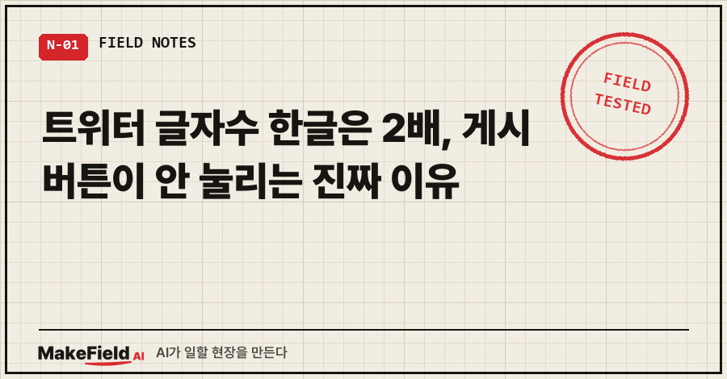
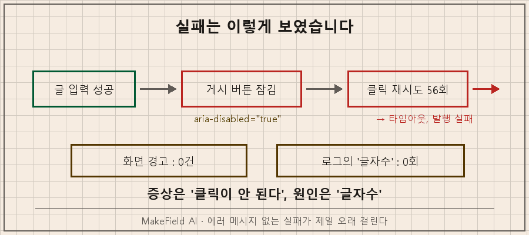
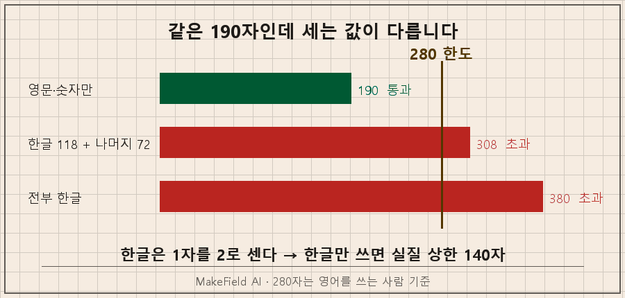
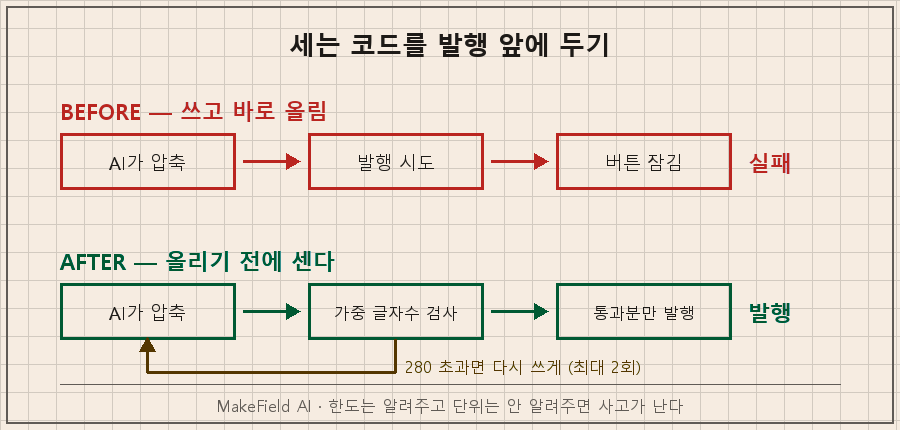

280자까지 된다고 적혀 있었습니다. 저는 190자를 썼고요. 그런데 게시 버튼이 안 눌렸어요. 트위터 글자수 한글로 세면 얘기가 완전히 달라지더라고요.
결론부터 적을게요. X는 글자를 하나씩 세지 않고, 문자마다 무게를 다르게 매겨서 셉니다. 그 저울에서 한글은 2자예요. 그래서 트위터 글자수 한글 기준 실질 상한은 280자가 아니라 140자입니다. 여유를 두면 130자고요.
저는 제조 현장에서 제어 일을 합니다. 계기 눈금 하나가 다른 단위로 읽히면 설비가 통째로 잘못 도는 바닥이라, 단위 다른 숫자를 유난히 무서워해요. 그래놓고 정작 제 PC에서 같은 실수를 했습니다.
2026년 8월 기준이고, 무료 계정에서 확인한 값이에요. 유료 요금제는 한도가 다르다고 들었는데 그건 제가 직접 못 봐서 여기선 안 다루겠습니다.
1. 에러가 안 났어요. 버튼이 안 눌렸을 뿐이죠
먼저 상황부터요. 제가 쓴 글을 AI한테 짧은 글로 압축시켜서 자동으로 올리는 걸 만들어 뒀어요. 매일 정해진 시간에 혼자 돕니다.
7월 17일 밤, 처음으로 진짜 발행을 걸었습니다. 그리고 로그에 이게 남았어요.
- locator resolved to <button disabled aria-disabled="true"
data-testid="tweetButton">
- attempting click action
2 × waiting for element to be visible, enabled and stable
- element is not enabled
- retrying click action
56 × waiting for element to be visible, enabled and stable
- element is not enabled
ERROR: 발행 실패읽어보면 사연이 뻔합니다. 글은 다 써서 입력창에 넣었어요. 그다음 게시 버튼을 누르려는데 그 버튼이 disabled 상태였습니다. 눌릴 때까지 기다리다가 56번을 더 시도하고 포기했어요.
여기서 헷갈렸던 게 이겁니다. 화면엔 아무 경고도 안 떴어요. "글자수를 초과했습니다" 같은 안내가 없었습니다. 그냥 버튼이 회색인 채로 가만히 있었을 뿐이에요.
그래서 저는 엉뚱한 곳부터 팠습니다. 로그인이 풀렸나, 브라우저 자동화가 막혔나, 버튼을 찾는 방식이 틀렸나. 30분쯤 그러고 있었어요..

에러 메시지가 없는 실패가 제일 오래 걸립니다. 증상은 "클릭이 안 된다"인데 원인은 "글자수"였으니, 증상과 원인 사이가 두 칸쯤 떨어져 있었어요.
2. 190자를 세어봤더니 308자였습니다
원인을 잡은 건 손으로 세어보고 나서였어요. 그 글은 190자였는데, X 기준으로는 308자였습니다. 한도가 280이니 28자 초과였고요.
계산은 단순합니다. 한글 한 글자를 2로, 영문·숫자·공백·기호를 1로 놓고 더하면 돼요.
거꾸로 풀어보면 그 글의 구성이 나옵니다. 308에서 190을 빼면 118, 그게 한글 글자수예요(한글만 1씩 더 먹으니까요).
- 한글 118자 → 118 × 2 = 236
- 나머지 72자(영문·숫자·공백 등) → 72 × 1 = 72
- 합계 308
같은 190자여도 뭘로 썼느냐에 따라 값이 완전히 달라집니다.
| 무엇으로 190자를 채웠나 | X가 세는 값 | 280 한도 |
|---|---|---|
| 전부 영문·숫자 | 190 | 통과 |
| 한글 118 + 나머지 72 (제 경우) | 308 | 초과 |
| 전부 한글 | 380 | 초과 |
그러니까 "280자"라는 숫자는 영어를 쓰는 사람 기준이에요. 한글로만 쓰면 그 절반인 140자가 진짜 상한입니다.

한글이 왜 2일까요. 공식 설명을 제가 확인한 건 아니라 이유는 모르겠습니다. 다만 한글 140자와 영문 280자를 나란히 놓고 보면 담기는 내용은 비슷하긴 해요. 제가 확인한 건 규칙이 그렇게 돌아간다는 사실뿐이고, 그 규칙이 화면 어디에도 안 적혀 있다는 게 문제였습니다.
3. 세는 코드를 발행 앞에 뒀습니다
고친 방법은 간단해요. 올리기 전에 먼저 세는 것. 열 줄이면 됩니다.
def weighted_len(s):
"""X 표시 글자수(한글·CJK는 1자를 2로 계산)"""
def w(ch):
o = ord(ch)
# 한글 완성형(가~힣)을 포함한 CJK 구간
for a, b in ((0x1100, 0x115F), (0x3040, 0x33FF),
(0x4E00, 0x9FFF), (0xAC00, 0xD7A3)):
if a <= o <= b:
return 2
return 1
return sum(w(c) for c in s)0xAC00부터 0xD7A3이 한글 '가'부터 '힣'까지예요. 일본어·중국어도 같은 대접을 받아서 구간을 몇 개 더 넣어뒀습니다.
그리고 이 함수를 발행 바로 앞에 게이트로 세웠어요. 넘으면 올리지 않고 AI한테 다시 쓰라고 시킵니다.
for attempt in range(2):
wl = weighted_len(body)
if wl <= 280:
log(f"글자수 OK: 가중 {wl}/280")
break
log(f"OVER_LIMIT: 가중 {wl}>280 → 재생성 {attempt+1}/2")
body = regenerate() # 더 짧게 다시 쓰게 시킨다
else:
log("발행 중단") # 두 번 해도 넘치면 안 올린다AI한테 주는 지시문도 같이 고쳤습니다. 원래는 "280자 이내"라고만 써뒀는데, 그게 문제였어요. AI는 자기가 쓴 글을 글자 단위로 세니까 190자를 280자 이내라고 판단합니다. 틀린 계산이 아니라 다른 저울을 쓴 거예요.
그래서 지시문을 이렇게 바꿨어요.
⚠️ X는 한글을 2자로 계산하므로 순수 한글 기준 130자 이내로 압축하라.
초과하면 게시 버튼이 잠겨 발행 불가.숫자만 280에서 130으로 바꿨는데 그 뒤로는 안 걸립니다. 사람한테든 AI한테든, 단위를 안 맞춰주고 한도만 알려주면 이런 사고가 나요.

4. 한 달치를 세어보니 두 번 걸렸더라고요
가드를 넣고 한 달쯤 지나서 로그 35일치를 훑어봤습니다. 발행 전 검사를 통과한 게 61건이었어요.
- 가중 글자수 중앙값 226 (한도의 81%)
- 가장 짧았던 날 176, 가장 길었던 날 255
- 250을 넘긴 날은 61건 중 3건
- 가드에 걸려 다시 쓴 건 2건 — 7월 17일 308, 8월 3일 314
두 번째 초과가 8월 3일이라는 게 좀 뜨끔했어요. 지시문에 130자라고 못 박아뒀는데도 AI가 314자짜리를 만들어 왔거든요. 규칙을 적어두는 것과 실제로 지켜지는 건 별개라는 뜻이죠. 그날은 가드가 대신 잡아서 재생성 한 번으로 끝났습니다.
그리고 문자수만 보고 있었으면 이 두 건 다 못 봤을 거예요. 314자였던 그 글도 화면에 보이는 길이는 200자가 채 안 됐을 테니까요.
이런 게 궁금하실 것 같아서
Q. 그냥 짧게 쓰면 되는 거 아닌가요?
맞습니다. 사람이 직접 쓸 때는 입력창 옆 숫자를 보면 되니 사실 문제가 안 돼요. 이건 사람이 화면을 안 보고 기계가 대신 올릴 때 생기는 사고입니다. 그런 경우엔 "짧게"가 아니라 숫자로 된 기준이 필요하고요.
Q. 한글 140자면 링크까지 포함해서인가요?
링크는 따로 계산됩니다. 저는 마지막 줄에 주소 한 줄을 붙이는데, 그 줄까지 포함해서 130자 이내로 맞춰뒀어요. 계산이 복잡해지느니 여유를 두는 쪽이 편하더라고요.
정리하면 이렇습니다. 트위터 글자수 한글은 2배로 매겨지고, 넘으면 에러 없이 실패해요. 화면에도 로그에도 이유가 안 적히니까, 세는 코드를 내 쪽에 하나 두는 수밖에 없습니다.
혹시 자동으로 뭔가를 올리고 계신다면, 그 서비스가 글자를 어떻게 세는지 한 번쯤 확인해보세요. 저는 190자를 190자로 믿고 있었거든요.
이런 계산 착각담도 makefield.ai에 같이 모아두고 있어요.
태그: #트위터글자수 #트위터글자수한글 #X글자수제한 #게시버튼비활성화 #트윗글자수세기 #자동게시실패 #AI에게일시키기 #AI글요약 #파이썬자동화 #자동화디버깅 #무인자동화 #AI에이전트 #개인AI에이전트 #현장엔지니어 #MakeFieldAI